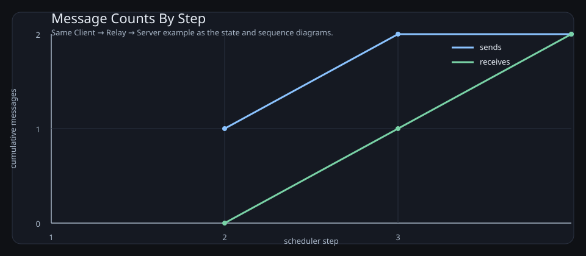

2026-03-22
This document records the current design intent for the actor IR, the declared control graph, the CTL checking model, the metric/event pipeline, and the documentation build. The target user is someone who can inspect diagrams and predicates, but does not want to learn a large formal language before getting value.
The central idea is:
The design goal is not to infer hidden control flow from simulation alone. Instead, transitions declare their possible next control states explicitly, and runtime execution validates that the declared next-state set is not wrong.
This repository is for readers who want the benefits of temporal logic and executable models without first committing to a large bespoke specification language.
The intended workflow is:
The important constraint is inspectability. The user should be able to reject a bad model by reading the states, guards, transitions, predicates, and generated diagrams.
The document uses the following terms consistently:
(next ...) control contractAn actor has:
Each actor owns its own state. Messages do not mutate the actor directly; they accumulate in the mailbox until the actor reaches a receive-ready transition.
A state is a named control location. For compiled models, the control location is explicit, not inferred from guard overlap.
A state contains transitions. A transition is selectable only if:
A transition contains:
(next ...) declarationExample:
(on (mailbox ping)
(next relay)
(recv ping)
(send C ping))The (next ...) declaration is the control-flow contract used for graph construction and CTL. Runtime execution validates that the post-step control state is one of the declared next states.
The central compromise in this repository is that transitions declare the set of possible successor control states directly.
That buys several things immediately:
It does not remove the need for correct modeling. A wrong (next ...) declaration can still make the proof layer wrong. The point is that the correctness obligation becomes visible and reviewable.
The scheduler is single-threaded but concurrent in effect. At each step:
Dice value in [0,1]If the chosen actor has no ready transition, it yields. This is not deadlock. Deadlock means no actor in the whole runtime has any ready transition.
Each actor mailbox can be treated as a bounded or unbounded queue.
recv is ready if a matching message is presentsend is ready if the target mailbox has spaceA mailbox capacity of 0 means synchronous rendezvous semantics.
send is ready only if the receiver has a matching ready recvrecv is ready only if a sender is ready to rendezvousThe runtime currently models this by checking receiver readiness before a zero-capacity send is allowed to execute.
Before attempting a step, the runtime samples a floating-point value called Dice in [0,1].
That value can be used in guards to express random branching, for example:
(on (dice-range 0.0 0.5 "route to branch a")
(next a)
(become a))
(on (dice-range 0.5 1.0 "route to branch b")
(next b)
(become b))This is enough to express:
When the only source of branching is Dice, the operational picture is close to a Markov-chain style model.
When both of these are present:
Dice-driven branching inside actor guardsthe operational picture is closer to a decision process: some choices are external or controlled, and some are probabilistic.
That is the important mixed case for systems such as:
The current unit tests include both:
dice-rangeCommunication is part of transition readiness. There is no partial transition semantics.
That means:
recv is not ready, the transition is not enabledsend is not ready, the transition is not enabledThis makes an atomic transition a real scheduler unit.
The intended normalized form is:
become / next-state updateBecause communication readiness is checked before execution, a send may appear textually in the middle of an action block without creating partial updates.
This repository treats a transition firing as a state change even when the actor remains in the same named control state. In other words:
The graph used by execution and model checking is therefore over full runtime states, while the declared control graph remains the human-facing skeleton.
The intended structured control tools are:
becomeifbecomeThis is closer to a small structured machine IR than to an arbitrary scripting language.
CTL needs an exact successor relation. In this design, the declared (next ...) relation is the control successor relation used by the proof layer.
Runtime execution exists to validate that:
This means CTL does not need to wait for simulation to discover the control graph.
The implementation currently supports:
¬, ∧, ∨, →not, and, or, impliesex, axef, afeg, ageu, auAtomic predicates currently include:
(in-state A done "actor A is in done")(data= A key value "actor A has the expected value")(mailbox-has A msg "actor A currently holds the message")Predicate forms may carry a final string argument used only as human-readable documentation. The evaluator ignores that trailing string semantically.
At the current stage, CTL is proving properties over the repository’s induced model, not solving theorem-proving problems over arbitrary infinite mathematics.
That means:
(next ...) relation is wrong, the result is only as good as that declarationThis is still useful. The tool is intended to make control flow, messaging, and temporal requirements inspectable enough that a human can review the generated model rather than trusting a hidden formalization.
Transitions, sends, and receives are recorded as structured runtime events. This is the base layer for line graphs and performance-style metrics.
At the current stage, the runtime can already derive:
This is the beginning of the metrics side of the tool. The goal is that message rates, queue growth, latency, throughput, and retry behavior should come from the event log rather than from ad hoc parsing of trace strings.
The language needs protocol-oriented built-ins so examples like authentication and key exchange do not require embedding large arithmetic sublanguages.
Current built-ins:
(md5 out source)
out(rsa-raw out modulus exponent message)
out(cryptorandom out bytes)
out(sample-exponential out rate)
outThese are intentionally low-level. They are not safe protocol APIs. They are protocol-modeling primitives.
Planned built-ins:
The current crypto built-ins are intentionally raw. The purpose of the built-ins is not to provide production-safe cryptographic APIs. The purpose is to let protocol examples express byte-level and arithmetic-level steps without bloating the core language.
The long-term direction is to support examples such as:
The IR is sensible if the following remain true:
This gives a coherent story for:
This project is not trying to replicate TLA+, CSP, PRISM, or Erlang exactly.
Instead, it borrows selected strengths:
The value is in the combination: a readable actor/message IR that an LLM can draft and a human can still audit.
The intended future workflow is:
This allows:
The current repository is intentionally small. The most important files are:
main.go the reader, runtime, CTL implementation, event log, and serialization codemain_test.go executable examples that pin down the semanticsdocs/ir.md this documentdocs/mermaid/ Mermaid sources rendered into SVG for publicationdocs/generated/ generated diagrams and plotsscripts/ helper scripts used by the documentation pipelineThe tests are not secondary. They are the clearest executable specification currently in the repository.
The document example should not be a single actor in isolation. The intended workflow is to describe a set of interacting actors, generate diagrams from that same input, and check temporal requirements over the same declared control graph.
This small message-chain example is intentionally simple, but it already exercises:
(actor Client
(state start
(on true
(next done)
(send Relay '(message (type ping)))
(become done)))
(state done))
(actor Relay
(state wait
(on (mailbox '(message (type ping)))
(next forwarded)
(recv '(message (type ping)))
(send Server '(message (type ping)))
(become forwarded))
(on true
(next wait)
(become wait)))
(state forwarded))
(actor Server
(state idle
(on (mailbox '(message (type ping)))
(next accepted)
(recv '(message (type ping)))
(set received '(message (type ping)))
(become accepted))
(on true
(next idle)
(become idle)))
(state accepted))Representative CTL requirements:
(ef (in-state Server accepted "server eventually accepts") "server acceptance is reachable")(af (data= Server received '(message (type ping)) "server records the ping message") "server eventually records the ping message")(ag (¬ (mailbox-has Relay '(message (type ping)) "relay still holds ping")) "relay mailbox is always empty of ping")The first two are intended to hold for the example model.
The third is intentionally useful as a negative example: it should fail at the initial state because there is a reachable moment where Relay is holding a ping message before it forwards it.
The operational intent is:
type is pingpingThe example should be read as three small control machines composed by message passing.
Client
startping-typed message to RelaydoneRelay
waitping-typed message is present, it consumes it, forwards it, and becomes forwardedServer
idleping-typed message is present, it consumes it, records it, and becomes acceptedidleThis example is deliberately small, but it is enough to show:
Because transitions, sends, and receives are now logged as structured events, the same example can also drive simple XY plots.

The present plot is intentionally simple. It is showing the kind of visualization the structured event log can support, not claiming to be the final metrics UI.
Natural follow-on plots include:
The build expects Mermaid sources under docs/mermaid/ and renders SVGs into docs/generated/.
Example includes:
a_to_b_sequence.mmd
sequenceDiagram
participant Client
participant Relay
participant Server
Client-->>Relay: message(type=ping)
Relay-->>Server: message(type=ping)

a_to_b_state.mmd
flowchart TD
subgraph Client
direction TB
C_start([start]) -->|"sent = ping<br/>become done"| C_done([done])
end
subgraph Relay
direction TB
R_wait([wait]) -->|"received = ping<br/>forwarded = ping<br/>become forwarded"| R_forwarded([forwarded])
R_wait -->|"wrong type or no ping<br/>become wait"| R_wait
end
subgraph Server
direction TB
S_idle([idle]) -->|"received = ping<br/>become accepted"| S_accepted([accepted])
S_idle -->|"wrong type or no ping<br/>become idle"| S_idle
end
C_done -. send ping .-> R_wait
R_forwarded -. send ping .-> S_idle
The important constraint is that the diagrams are not decorative extras. They are another view over the same declared control structure.
The Makefile provides:
make testmake docsmake diagramsmake serve-docsmake cleanCurrent assumptions:
pandoc is installed for document generationmmdc is installed for Mermaid-to-SVG generationThe document and Mermaid build are intentionally kept separate so the same generated Mermaid source can be inspected directly.
After running make docs, the generated document lives at:
docs/build/ir.htmlFor local review, the repository also provides a simple static server target:
make serve-docsThat serves docs/build/ over a local HTTP server so the generated HTML, SVG diagrams, and plots can be reviewed together in a browser.
This repository is still a skeleton. Important things are intentionally incomplete:
That is acceptable for this stage. The repository is already good enough to show the core thesis: